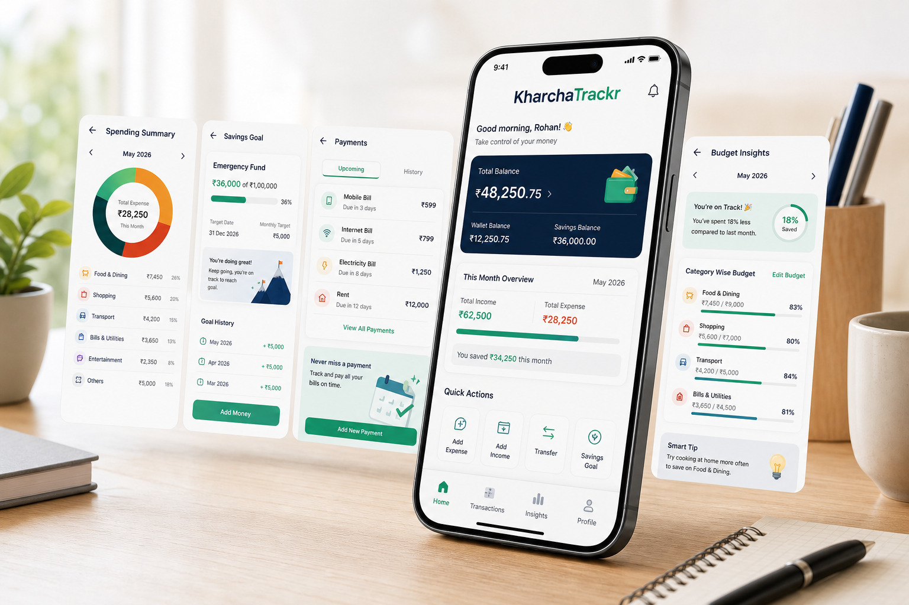

Capture money movement
Add cash, UPI, card, bank, wallet, and recurring entries in a few taps. Categories help you separate essentials from lifestyle spending so the month becomes easier to understand.
Personal finance app for everyday India
KharchaTrackr helps you record expenses, plan budgets, build savings, and understand monthly cash flow without complicated spreadsheets. It is made for families, students, salaried professionals, and small business owners who want a clearer money routine.

Why KharchaTrackr
Most people do not need a complicated finance dashboard. They need a dependable habit: add what came in, record what went out, know what remains, and decide what to do next. KharchaTrackr keeps that daily rhythm simple while still giving you enough detail to make better monthly decisions.
Add cash, UPI, card, bank, wallet, and recurring entries in a few taps. Categories help you separate essentials from lifestyle spending so the month becomes easier to understand.
Set monthly limits for rent, groceries, transport, bills, school fees, or business purchases. KharchaTrackr shows where you are comfortable and where you should slow down.
Create savings goals for emergency funds, travel, gadgets, education, or family needs. Progress stays visible, so saving feels like a planned action instead of leftover money.
Designed for daily use
KharchaTrackr does not try to make personal finance feel like a trading terminal. The app focuses on the things most people check repeatedly: what they spent, what they owe, what they saved, and what is safe to spend next.
Who it helps
Track salary, EMIs, rent, groceries, subscriptions, travel, and monthly savings from one mobile view.
Manage allowance, hostel spending, transport, food, learning expenses, and small savings goals.
Plan household budgets, school fees, medicine, utility bills, festivals, and emergency savings.
Record daily cash movement, customer payments, supplier expenses, and basic business categories.
Ready when you are
You do not need perfect records on day one. Add the first few entries, review the pattern, and let KharchaTrackr help you build a better money habit.